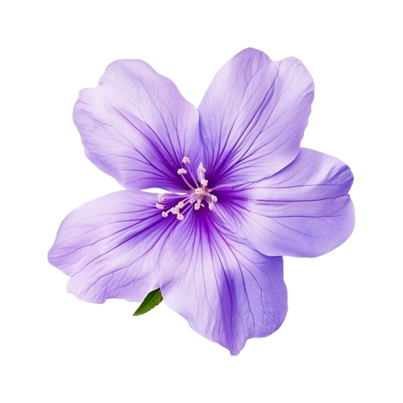

Qui suis-je ?
À Propos
Apprenez à me connaître, mon parcours et mes inspirations.

Qui suis-je ?
Apprenez à me connaître, mon parcours et mes inspirations.
Passionnée par la création numérique, je m'intéresse autant au design qu'au code. Curieuse, motivée et appliquée, j'aime apprendre continuellement et concevoir des projets soignés.
IUT de Troyes
IUT de Troyes
Spécialité Innovation Technologique
Lycée Irène et Frédéric Joliot-Curie
Retrouvez le détail complet de mes formations et de mes expériences professionnelles en téléchargeant mon profil au format PDF.